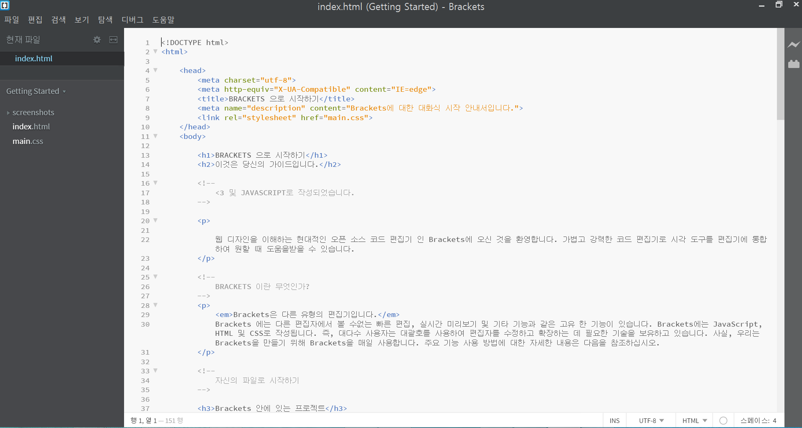

웹 디자인을 이해하는 현대적인 오픈 소스 코드 편집기 인 Brackets에 오신 것을 환영합니다. 가볍고 강력한 코드 편집기로 시각 도구를 편집기에 통합하여 원할 때 도움을받을 수 있습니다.
Brackets은 다른 유형의 편집기입니다. Brackets 에는 다른 편집자에서 볼 수없는 빠른 편집, 실시간 미리보기 및 기타 기능과 같은 고유 한 기능이 있습니다. Brackets에는 JavaScript, HTML 및 CSS로 작성됩니다. 즉, 대다수 사용자는 대괄호를 사용하여 편집자를 수정하고 확장하는 데 필요한 기술을 보유하고 있습니다. 사실, 우리는 Brackets을 만들기 위해 Brackets을 매일 사용합니다. 주요 기능 사용 방법에 대한 자세한 내용은 다음을 참조하십시오.
Brackets을 사용하여 자신의 코드를 편집하려면 파일이 들어있는 폴더를 열면 됩니다. Brackets은 현재 열려있는 폴더를 "프로젝트"로 취급합니다. 코드 힌트, 실시간 미리보기 및 빠른 편집과 같은 기능은 현재 열려있는 폴더 내의 파일에만 사용합니다.
이 샘플 프로젝트에서 벗어나 자신의 코드를 편집 할 준비가되면 왼쪽 사이드 바의 드롭 다운을 사용하여 폴더를 전환 할 수 있습니다. 지금은 드롭 다운에 "시작하기"라고 표시되어 있습니다. 바로 지금보고있는 파일이 들어있는 폴더입니다. 드롭 다운을 클릭하고 "폴더 열기 ..."를 선택하여 자신의 폴더를 엽니 다. 나중에이 드롭 다운을 사용하여이 샘플 프로젝트를 포함하여 이전에 열어 본 폴더로 다시 전환 할 수도 있습니다.문서를 더 이상 전환하지 않고 컨텍스트를 잃어 버리지 않습니다. HTML을 편집 할 때 Cmd / Ctrl + E 단축키를 사용하여 모든 관련 CSS를 표시하는 빠른 인라인 편집기를 엽니다. CSS를 조정하고 ESC 를 누르면 HTML 편집으로 돌아가거나 CSS 규칙을 열어두면 HTML 편집기의 일부가 됩니다. 빠른 인라인 편집기 밖에서 ESC 를 누르면 모두 축소됩니다. 빠른 편집은 중첩 된 규칙을 포함하여 LESS 및 SCSS 파일에 정의 된 규칙을 찾습니다.
그것을 실제로보고 싶습니까? 위의 태그에 커서를 놓고 Cmd / Ctrl + E 를 누르십시오. 위의 CSS 빠른 편집기가 표시되어 CSS 규칙이 적용됩니다. 빠른 편집은 클래스 및 id 속성에서도 작동합니다. LESS 및 SCSS 파일과 함께 사용할 수도 있습니다. 같은 방식으로 새 규칙을 만들 수 있습니다. 위의 태그 중 하나를 클릭하고 Cmd / Ctrl + E 를 누르십시오. 지금은 규칙이 없지만 새 규칙 버튼을 클릭하여 새 규칙을 추가 할 수 있습니다. 동일한 바로 가기를 사용하여 JavaScript, 색상 및 애니메이션 타이밍 기능의 다른 기능을 편집 할 수 있으며 점점 더 많은 시간을 추가하고 있습니다
지금은 인라인 편집기를 중첩 할 수 없으므로 커서가 "전체 크기"편집기 인 경우에만 빠른 편집을 사용할 수 있습니다.
우리가 수년간 해왔 던 "저장 / 재 장전 댄스"를 아십니까? 편집기에서 변경 한 내용을 저장하고 브라우저로 전환 한 다음 새로 고침하여 최종 결과를 확인하십시오. 괄호로, 당신은 그 춤을 할 필요가 없습니다.
Brackets은 는 로컬 브라우저에 live connection 을 열고 입력 할 때 HTML 및 CSS 업데이트를 푸시합니다. 브라우저 기반 도구를 사용하여 이미 이와 같은 작업을 수행 하고 있을 수도 있지만 Brackets을 사용하면 최종 코드를 복사하여 편집기에 다시 붙여 넣을 필요가 없습니다. 코드는 브라우저에서 실행되지만 편집기에서 실행됩니다.
Brackets을 사용하면 HTML 및 CSS 변경이 페이지에 어떤 영향을 주는지 쉽게 알 수 있습니다. 커서가 CSS 규칙에 있으면 Brackets은 브라우저에서 영향을 받는 모든 요소를 강조 표시합니다.마찬가지로 HTML 파일을 편집 할 때 Brackets은 브라우저에서 해당 HTML 요소를 강조 표시합니다.
Chrome을 설치 한 경우 직접 시도해 볼 수 있습니다. 대괄호 창의 오른쪽 위 모서리에있는 번개 모양 아이콘을 클릭하거나 Cmd / Ctrl + Alt + P 를 누르십시오. HTML 문서에서 실시간 미리보기가 활성화되면 연결된 모든 CSS 문서를 실시간으로 편집 할 수 있습니다. 괄호가 브라우저에 연결되면 아이콘이 회색에서 금색으로 바뀝니다.이제 위의 태그에 커서를 놓으십시오. Chrome에서 이미지 주변에 나타나는 파란색 강조 표시를 확인합니다. 다음으로 Cmd / Ctrl + E 를 사용하여 정의 된 CSS 규칙을 엽니 다. 국경의 크기를 10px에서 20px로 변경하거나 배경색을 "투명"에서 "핫 핑크"로 변경하십시오. 대괄호가 있고 브라우저가 나란히 실행되면 변경 사항이 브라우저에 즉시 반영됩니다. 멋지다, 맞지?현재 브라켓은 HTML 및 CSS에 대한 실시간 미리보기 만 지원합니다. 그러나 현재 버전에서는 저장시 JavaScript 파일의 변경 사항이 자동으로 다시 로드됩니다. 현재 JavaScript에 대한 라이브 미리보기 지원을 위해 노력하고 있습니다. 실시간 미리보기는 Google 크롬에서만 가능하지만 이후 모든 주요 브라우저에 기능을 제공하기를 바랍니다.
HEX 또는 RGB 값에 해당하는 색상을 기억하지 않은 사용자의 경우 Brackets을 사용하면 어떤 색상이 사용되는지 정확하게 볼 수 있습니다. CSS 또는 HTML에서 색상 값이나 변수 위로 마우스를 가져 가면 Brackets에 해당 색상 / 변수의 미리보기가 자동으로 표시됩니다. 이미지도 마찬가지입니다. Brackets 편집기의 이미지 링크 위로 마우스를 가져 가면 해당 이미지의 미리보기 미리보기가 표시됩니다.
빠른보기를 직접 사용해 보려면 이 상단의 태그에 커서를 올려 놓으십시오. Cmd / Ctrl + E 를 눌러 CSS 빠른 편집기를 엽니다. 이제 간단하게 CSS 내의 색상 값. 또한 태그에서 CSS 빠른 편집기를 열고 배경 이미지 값 위로 마우스를 가져 가면 그래디언트의 동작을 볼 수 있습니다. 이미지 미리보기를 시험해 보려면 이 문서 앞 부분에 있는 스크린 샷 이미지 위에 커서를 놓으십시오.Brackets에 내장 된 모든 장점에 더하여, 확장 개발자의 대규모 성장 커뮤니티에는 유용한 기능을 추가하는 수백 가지 확장 기능이 있습니다. Brackets이 제공하지 않는 것을 필요로 하는 경우 누군가가 그 확장 기능을 확장했을 가능성이 큽니다. 사용 가능한 확장 프로그램 목록을 탐색하거나 검색하려면 파일> 확장 관리자 ... 를 선택하고 '사용 가능'탭을 클릭하십시오. 원하는 확장자를 찾으면 바로 옆에 있는 "설치"버튼을 클릭하십시오.
Brackets는 오픈 소스 프로젝트입니다. 전 세계의 웹 개발자가 더 나은 코드 편집기를 작성하는데 기여하고 있습니다. 더 많은 것은 Brackets의 기능을 확장하는 확장 기능을 구축합니다. 의견을 나누거나 아이디어를 공유하거나 프로젝트에 직접 기여하십시오.